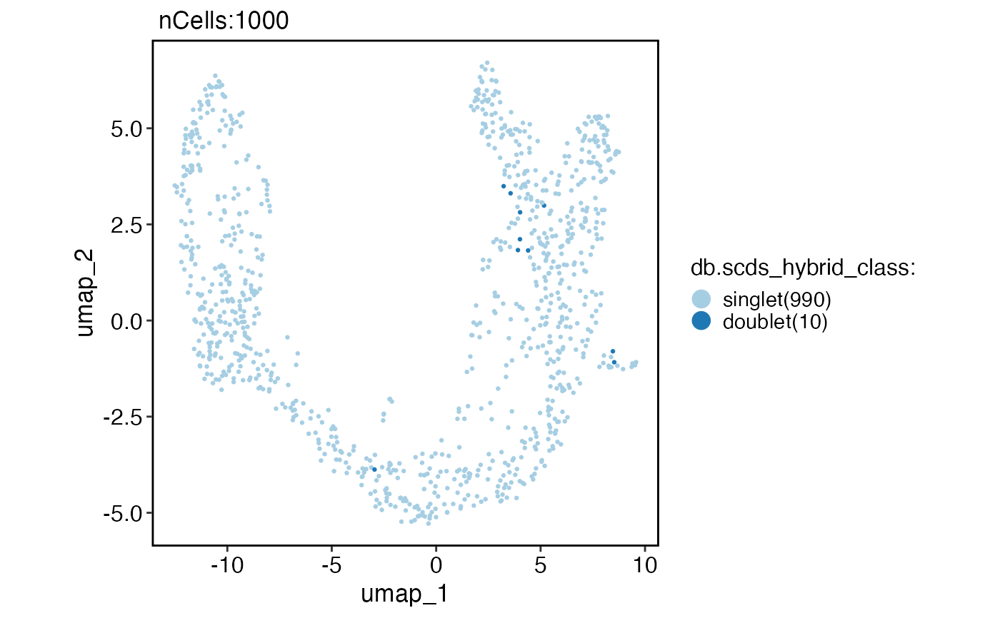
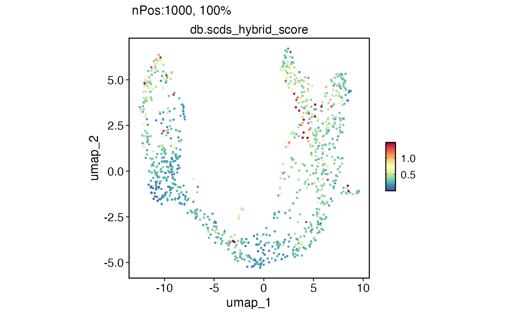

This function performs doublet-calling using the scds package on a Seurat object.
A Seurat object.
The name of the assay to be used for doublet-calling. Default is "RNA".
The expected doublet rate. Default is calculated as ncol(srt) / 1000 * 0.01.
The method to be used for doublet-calling. Options are "hybrid", "cxds", or "bcds".
Additional arguments to be passed to scds::cxds_bcds_hybrid function.
data("pancreas_sub")
pancreas_sub <- db_scds(pancreas_sub, method = "hybrid")
#> Install package: "scds" ...
#> 'getOption("repos")' replaces Bioconductor standard repositories, see 'help("repositories", package = "BiocManager")'
#> for details.
#> Replacement repositories:
#> CRAN: https://cloud.r-project.org
#> Bioconductor version 3.18 (BiocManager 1.30.23), R 4.3.2 (2023-10-31)
#> Installing package(s) 'scds'
#>
#> The downloaded binary packages are in
#> /var/folders/rv/3jnfbs0d6r7d0c5bfj7ft5k00000gn/T//RtmpAC8Cie/downloaded_packages
CellDimPlot(pancreas_sub, reduction = "umap", group.by = "db.scds_hybrid_class")
#> Warning: No shared levels found between `names(values)` of the manual scale and the data's fill values.

FeatureDimPlot(pancreas_sub, reduction = "umap", features = "db.scds_hybrid_score")
